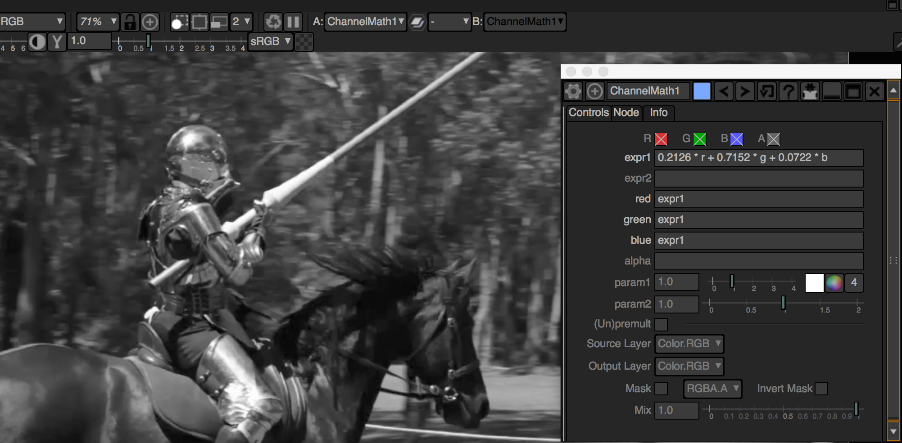
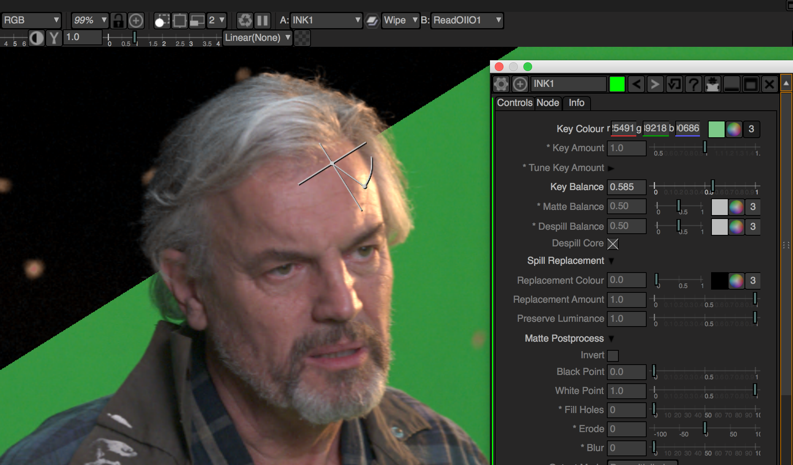

Here are a couple of video compositing plugins for applications that support the OFX plugin standard. Compatible with the free open source Natron compositor, The Foundry's Nuke, Blackmagic Resolve, Vegas Pro, SGO Mistika and SCRATCH by Assimilate.
Download
ChannelMath
ChannelMath is an artist-friendly channel math expression node. It is designed to be simple and easy to use.
INK Keyer
INK is a blue/green screen keyer that is suitable for both novice and expert compositors. Check out the user guide. There's a version for the Lightworks NLE here.
Authors and Contributors
ChannelMath and INK are written by Nicholas Carroll (@nicholascarroll).